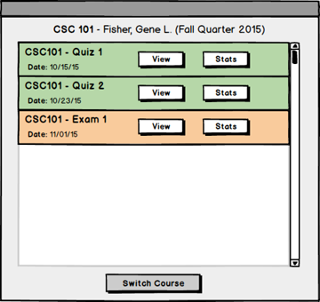

To grade a specific published test, the user clicks Grade button from the main menu. The system responds by showing a course list as shown in Figure 1. //the button Grade on a specific published test from the list of published tests. The system displays the Grade Published Test Menu. Figure 1 illustrates this.
Figure 1: PICTURE OF COURSE LIST MENU
This menu shows a list of courses the user has access to. The user then selects a course from the course list, as shown in Figure 2.
Figure 2: PICTURE OF COURSE LIST MENU AFTER SELECTING COURSE
From this screen the user clicks OK to select the course. The system responds by bringing up the Select Published Test Menu as shown in Figure 3.

Figure 3: PICTURE OF PUBLISHED TEST LIST MENU
This menu shows all the tests within the course previously selected. The system highlights a test in green to show it has already been graded and yellow to show it is not yet finished grading.
The user clicks the View button underneath the test to start grading that test; the system responds by showing the Grade Submissions Menu as shown in Figure 4. The Stats button is described in section 2.5.2.
Figure 4: PICTURE OF GRADE SUBMISSIONS MENU
The Grade Submissions Menu displays 2 lists.
The first list displays Test Submissions for each user that has completed the Published Test. Each Test Submission has the users Id, Name, and current Score.
The second list displays Questions on the Published Test. For each question the system displays the number of the question, the page the question is on, the maxmium points for that quesiton, the max score current achieved on that question, the average score on that question, the minimum score on that question, and how much of the Submitted Answers have been graded so far.
The user selects a Test Submission and clicks grade selected. The system responds by showing the Grade Test Submission Menu as shown in Figure 5.
The user can also select a Question and click grade selected which takes them to the Grade Question Submission Menu shown in Figure 6.
Figure 5: PICTURE OF GRADE TEST SUBMISSION MENU
The Grade Test Submission Menu displays the test in a similar format to when a student takes the test except it also shows a score input field and a comment input field.
The user can navigate through the different pages of the test by pressing the numbered buttons on the bottom of the menu.
After the user types in a new score or comment, they press next which brings them to the same menu or a different student.
Back to Grade Submissions Menu
Figure 3: PICTURE OF GRADE QUESTION SUBMISSION MENU
This menu displays only a single question and submitted answer. It's useful when a user wants to grade all submissions for a specific question at once.
This menu displays the same as when taking the test except that an answer is already filled in and there is a score input field and a comment input field.
The user enters in a comment as displayed in Figure 7.
Figure 7: PICTURE OF GRADE QUESTION SUBMISSION MENU AFTER ADDING COMMENT
The system displays the added comment in the text input field. The user then clicks the Next button to go to the next answer submission for this question.
The user can also click the Clear button to remove any previous comment and score.